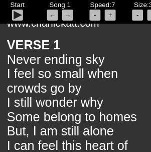
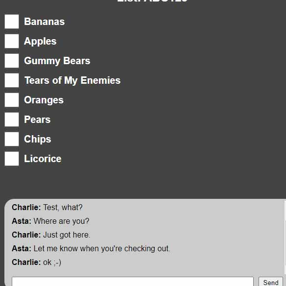

IN PROGRESS
This is a partially working web-based teleprompter application geared toward song writers who perform on-stage. It is not completed as of yet, but will have the ability to create, edit, share, and display songs like a traditional teleprompter.
HTML, CSS, JS, PHP

IN PROGRESS
This is a shared grocery list designed for someone shopping for an at-home person. This was inspired by the Covid outbreak to reduce customers inside stores at the height of the pandemic. It will update when the shopper has crossed-off an item and be able to add and delete items on-the-fly. It will include a live chat as well.
HTML, CSS, JS

This is a simple binary calculator that has the ability to convert decimal numbers to binary and binary numbers to decimal.
HTML, CSS, JS

This is a quota calculator designed to convert the daily amounts of photographer's images into meaningful data to keep track of their progress. It was to be used in the department where I currently work at Jewelry Television.
HTML, CSS, JS
This is a simple version of a game inspired by the popular game Space Invaders.
HTML, CSS, JS, jQuery

IN PROGRESS
This is where I test and learn what I am currently studying. This is always in progress and always growing.
HTML, CSS, JS

IN PROGRESS
I have recently started a Wordle clone. I have only gotten to the beginnings of the initial design. More to come soon.
HTML, CSS, JS

IN PROGRESS
This will eventually become a working image database, modeled after an application we use at Jewelry Television. I hope for the company to utilize it one day based on the additional functions and improvements I have implemented.
HTML, CSS, JS

I am a graduate from Pellissippi State Community College with a Computer Programming degree. Courses completed include Programming I & II (Java), Web/Internet Software Development (JavaScript, jQuery, PHP, Bootstrap, HTML, CSS, Less), Advanced Database and Programming, Data Management Systems (SQL), Systems Analysis and Design, and Applied Systems Development.
I am a former Senior Mechanical Production Artist at Publishers Clearing House in New York with over 20 years of professional Adobe Photoshop experience. I am a dedicated, hard working employee, and problem solver. I also currently have 13+ years experience as a Senior Photographer at Jewelry Television in our in-house jewelry and gemstone photography department.
Other areas of experience include: Logo design, graphic design, 3D modeling and animation, photography, mechanical artist, singing, songwriting, piano, acoustic guitar and ukulele, audio recording.